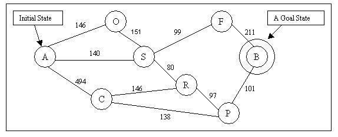
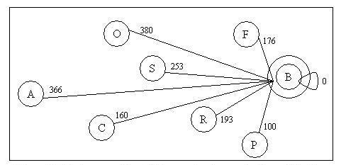
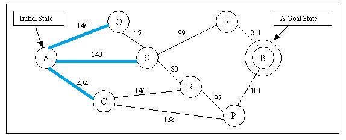
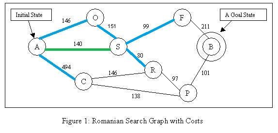
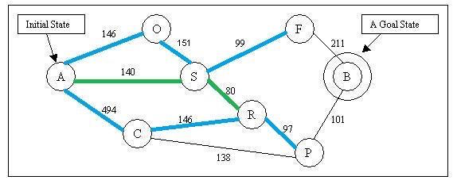
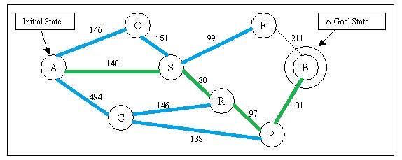

What is A-search?
A-search is a graph search algorithm that evaluates nodes by a function f(n), which combines a new term, g(n), or the cost to reach the node, and h(n), the cost to get from the node to the goal:
$$f(n) = g(n) + h(n)$$
Since $$g(m,n)$$ is the path cost from the current node n to a potential successor m, and $$h(n)$$ is the estimated cost of the cheapest path from a node n to the goal, we have:
$$f(n)$$ = estimated cost of the cheapest solution through n.
Now, let’s use the previous example to see how A-search works. Below is a map that we are going to search the path on.

This is a map of a city. We are going to find out a path from city A to city B.
g(n,m) is the number along the edge between any two nodes n and m; g(A,O) = 146, for example.

This graph shows the straight distance from each city to city B. The straight distances serve as each cities’ h(n) in this example.
Let’s assume cities on the map as nodes and path between cities as edges. Strat exploring node a, we have node O, S and C reachable now.

According to the estimate function f(n): Node O’s f(n) = g(A,O) + h(O) 146+380 = 526, Node S’ f(n) = g(A,S) + h(S) = 140 + 253 = 193, Node C’s f(n) = g(A,C) + h(C) = 494 + 160 = 654. The algorithm will choose to explore node S. After explored S, we have new node R and F reachable now.

According to the estimate function f(n): Node O’s f(n) = 526, Node C’s f(n) = 654, Node F’s f(n) = 239 + 176 = 415, Node R’s f(n) = 220 + 193 = 413. The algorithm will choose to explore node R. After explored R, we have new node P reachable now.

According to the estimate function f(n): Node C’s f(n) = 413 + 146 + 160= 719 Node P’s f(n) = 413 + 97 + 100 = 610. The algorithm will choose to explore node P. After explored P, we have new node B reachable now, which is our goal node.
